UX, web design, identity, and everything in between.
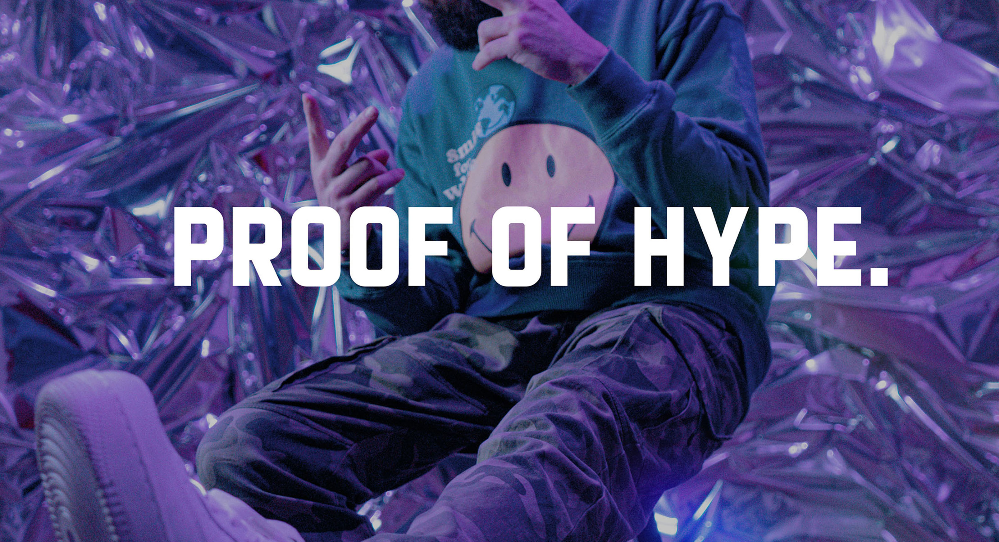
The Why: There's a growing need for creators and everyday users to make endorsements that feel real, lasting, and low-effort, without relying on cluttered feeds or disappearing stories. ShoutStack was my response: a tool designed to make public praise simple, sincere, and shareable.
The How: I completed a full brand sprint in three days, developing everything from the logo and type system to a live, responsive UI demo. Built from scratch in VSCode and deployed to GitHub Pages. Halfway through I pivoted from static mockups to a working prototype when I realised tone and simplicity were best communicated interactively.
The Outcome: A cohesive, expressive brand that feels both confident and human, a fully functional prototype backed by a strategic brand system, complete with live demos, user personas, a journey map, and a full visual identity.
Visit Live App GitHub Repo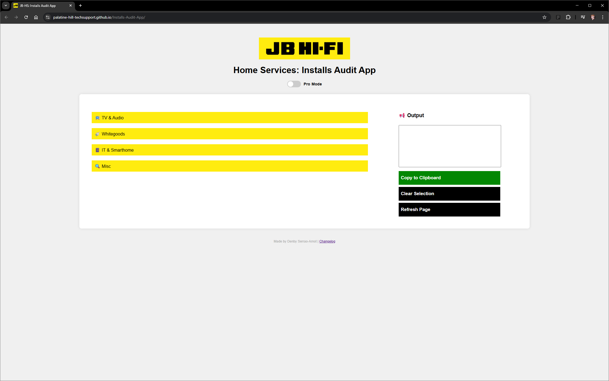
The Why: Our team invested considerable time conducting surveys for subcontractors across Australia, but there was no clear review process. Each person approached work in their own way, resulting in data that was often unusable. The management team never checked it, a big waste of time.
The How: We used a pre-existing rate card negotiated between management and subcontractors, with clear, mandatory minimums for every service, as the foundation for the first version of the web app.
The Outcome: The unified data was a hit. Actionable statistics could now be used for meaningful reporting. Feedback focused on the UI, so we added a "Pro Mode Toggle" to keep the original UI as an option. The Salesforce admin adopted my code to build the audit tool directly into Salesforce, now a fully integrated feature in daily workflow.
Visit Live App GitHub Repo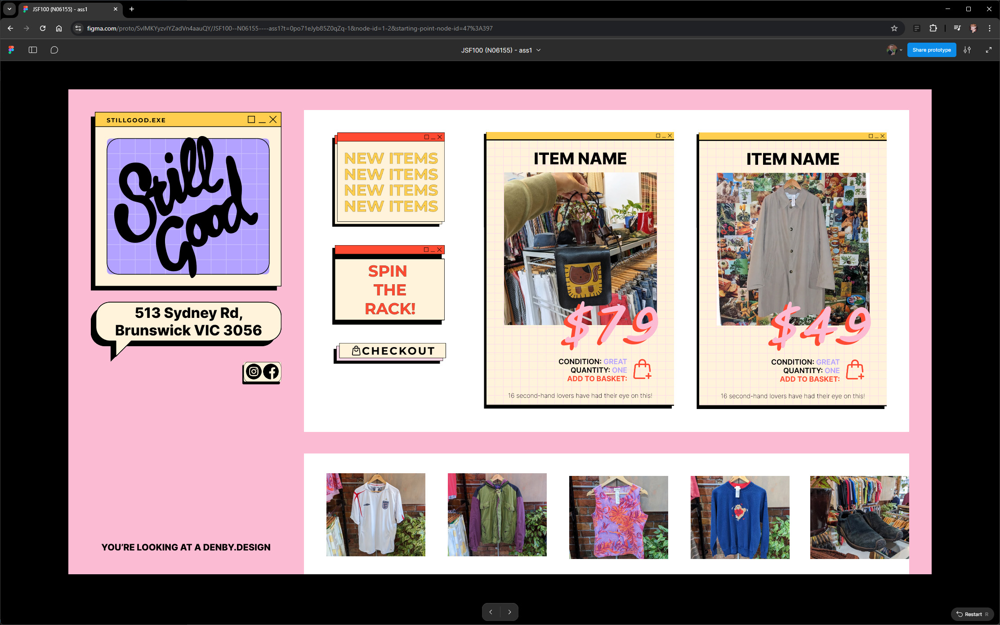
The Why: We got to choose a client of our own creation. I went with my local second-hand store that churns out pre-loved wonders every week.
The How: By this point I'd familiarised myself with Figma much more, and I hope that comes through in the prototype. A lot of work went into refining the colour palette and aesthetics, with custom graphics and features like "Spin the Rack", which aims to replicate the fun of just spinning and grabbing something new.
The Outcome: The layout and vibe encapsulate the store well and present a lot of products and ideas without overcomplicating the UI and UX.
Visit Live Site Figma Prototype GitHub Repo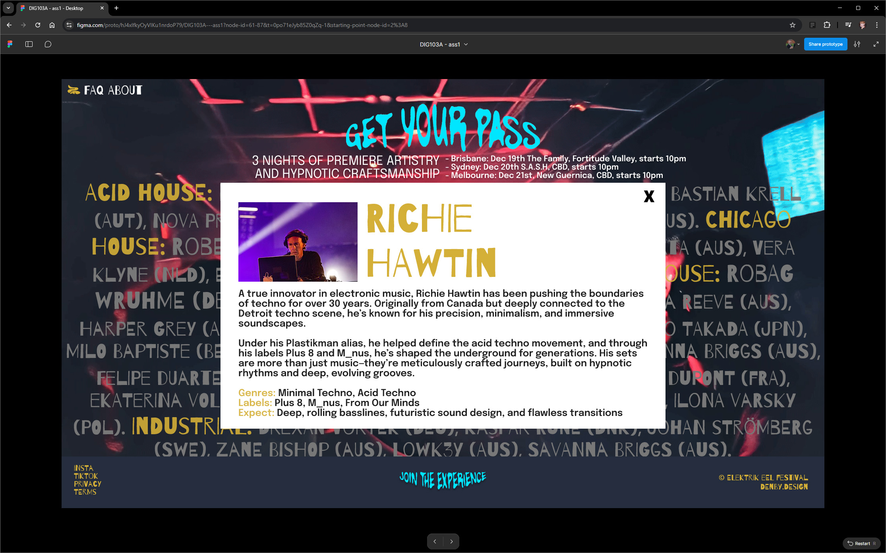
The Why: This assessment focused on enhancing front-end web design skills by creating a responsive webpage for a client, incorporating mobile responsiveness, jQuery functionality, and user input.
The How: Not only was this my crash course in Figma, but it was also the first time none of the planning was done entirely in my head. From building personas and sketching wireframes to experimenting with Figma and finally bringing it all together in code, this felt like my closest experience to completing a full agile sprint.
The Outcome: I'm proud of the vibe I managed to capture. I was given a single image to work with and used AI tools to extrapolate a looped video from it. The red haze from this video became the defining feature of the site.
Visit Live Site Figma Prototype GitHub Repo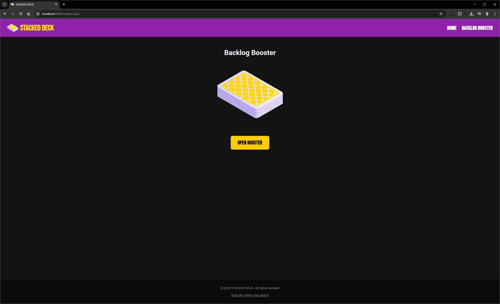
The Why: A dynamic storefront connecting to an online database, PHP and MySQL enable this and are used in over 78% of websites. Mastering these gives foundational skills for working with data-driven web frameworks.
The How: I immediately knew which online storefront I wanted to replicate in PHP, backed by MySQL. It was also my first time working with Docker, after quickly getting the container up and running, I found it surprisingly intuitive.
The Outcome: I wanted to do more than just pull data into an array, so I leaned into a current gaming trope and built a loot box system. It turned out even better than I'd hoped.
Watch Demo GitHub RepoThe Why: This subject explored the connection between materials and storytelling, how design can convey meaning through experimentation. I applied my knowledge to create a completed project ranging from artistic exploration to branding.
The How: If Foundations of Existence was learning to crawl, this required a headlong sprint. A much more involved physical piece, still delivered through my favourite medium, enhanced and animated through web design. While researching I stumbled upon Alan Watts' The Way of Zen (1957), which became a cornerstone.
The Outcome: After much sourcing, sanding, gluing, composing, and keyframing, I'm absolutely wrapped with how it all came together. The synthwave filters enhance the animated model dancing to the slow, windy sound effect layered over the lofi music, a perfect complement to Alan's incredible poetry.
View Project GitHub Repo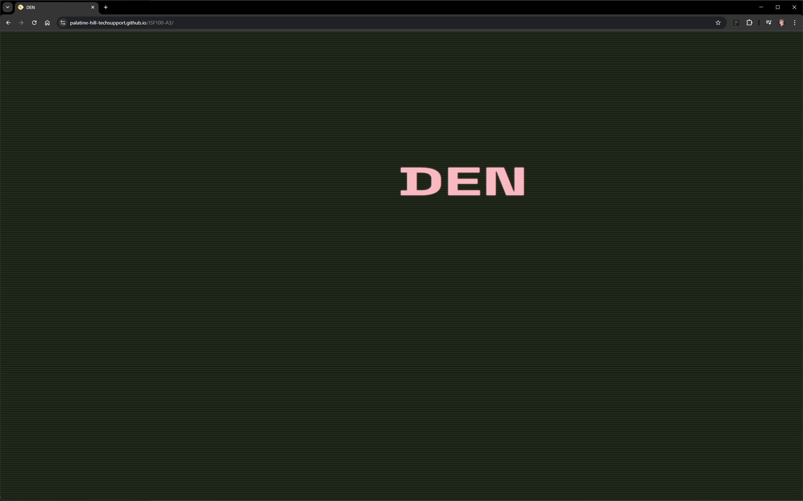
The Why: JavaScript animation libraries enable interactive web animations by triggering CSS animations with JavaScript events, Pixie.js, GSAP, Lottie.js, Three.js. These build on familiar development environments for web designers.
The How: Designed to showcase ability to animate in JS, but I'm particularly proud of the concept and execution. Inspired by the ever-captivating bouncing DVD screensaver, I replicated the feel of early video with fonts, colour palette, and animated text.
The Outcome: I'm especially proud of the fake loading bar, the scan lines animated into everything, the flash effect as the menu comes on and off, and the idea of putting a demo of the project within the project itself.
Launch Site GitHub Repo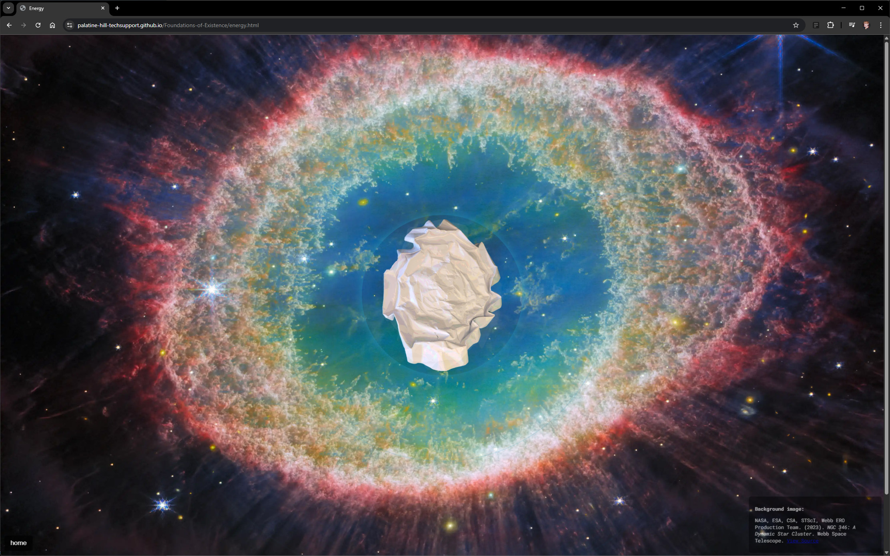
The Why: This project introduced the attributes of materiality and encouraged me to reimagine creation through making, exploring creativity and developing design skills with paper manipulation.
The How: When tasked with experimenting with paper sculptures, I decided to approach it through the lens of web design. I was inspired by the recently released James Webb Space Telescope images, the Foundations of Existence.
The Outcome: The minimalist sculpture work explores a maximalist concept enhanced in the web design medium. The James Webb images are animated with CSS and JS, and the same techniques animate the sculptures themselves, making the entire end product feel alive.
Visit Live Site GitHub Repo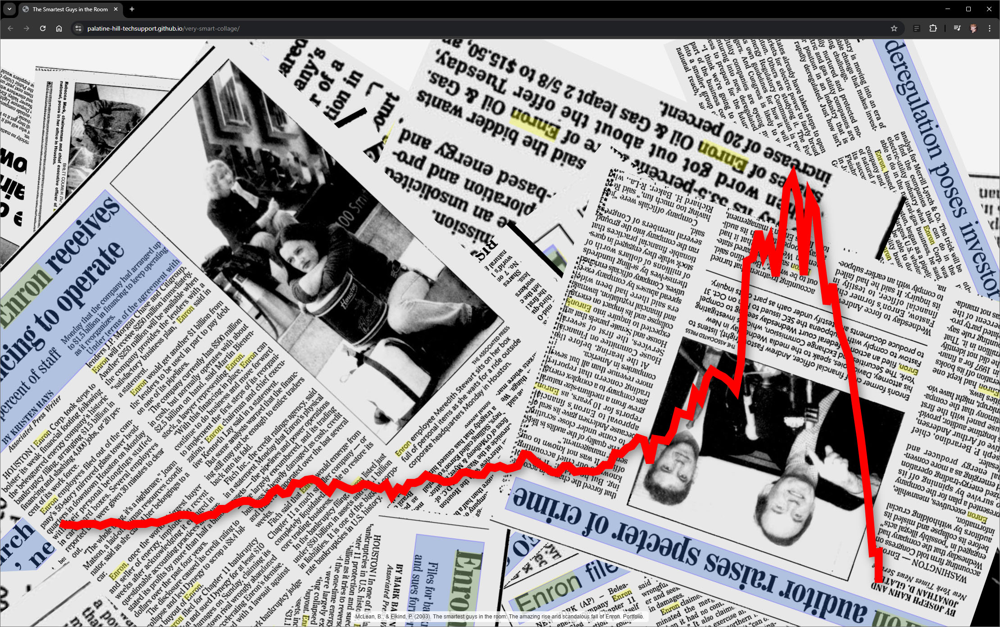
The Why: An early project for DCX101 - Design Context, aimed at showcasing creative expression through a digitally made collage. I chose web design as the medium to continue developing that skillset.
The How: After reading The Smartest Guys in the Room, I found key data points tracking Enron's stock price. I also used Google Scholar to gather relevant newspaper clippings, which formed the basis of the collage.
The Outcome: I'm really happy with how the articles animate across the page and the story the timeline tells as it unfolds. Simple, yet impactful, and I hope it visually encapsulates the highs and lows of Enron's fascinating story.
Visit Live Site GitHub RepoThe Why: An early project for DCX101 - Design Context. With almost no restrictions, we were tasked with creating a visual metaphor for "curiosity." As always, I chose web design and set myself a challenge.
The How: While creating a mood board I came across an amazing artwork on DeviantArt featuring Alice slipping down the rabbit hole. I knew immediately it had to be the focal point of the project.
The Outcome: To truly embody the concept of curiosity, I wanted to reward it rather than coax it. The site will only function for the curious.
Visit Live Site GitHub Repo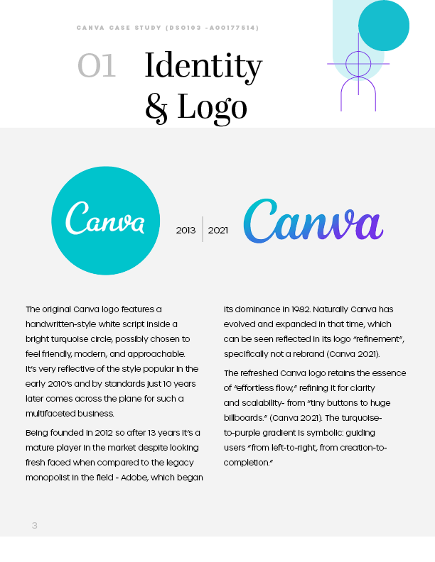
The Why: This subject covers the fundamentals of creating and developing brands. I'd been canva-curious for some time, and this was a fantastic reason to dive into the research rabbit hole.
The How: I went through an absolute plethora of articles and videos detailing Melanie Perkins' amazing rise to glory and the story of how a little Aussie company took on an industry many thought had already been conquered.
The Outcome: I'm really proud of how I've woven the brand's identity into the design of the report itself. It may lean more opinion piece than case study, but I hope it demonstrates my ability to look analytically at a business and its own creative process.
Read Report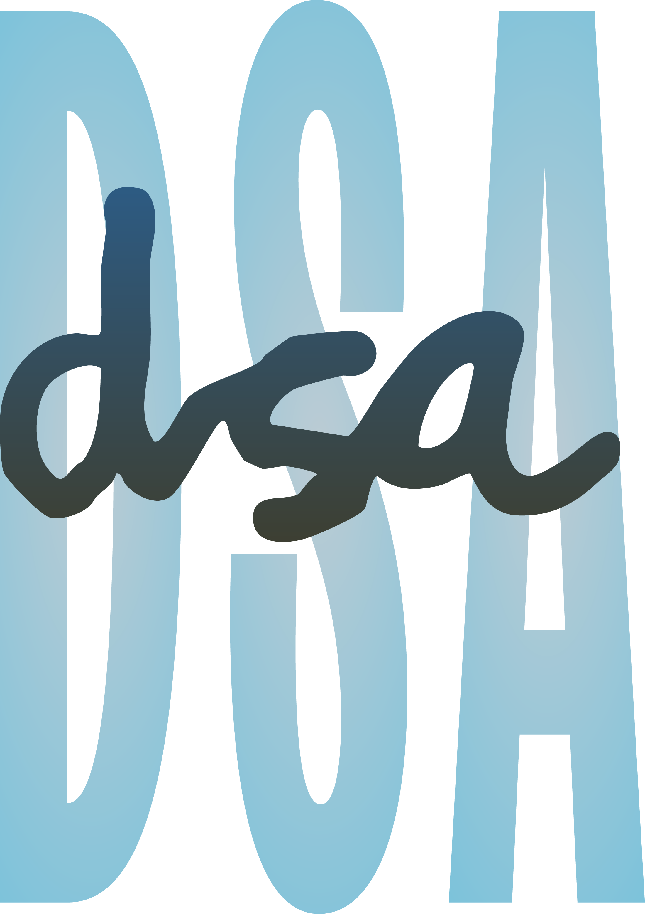
The Why: A lettermark addresses both mnemonic and legibility issues, simple, unique, and instantly recognizable. This assessment asked me to develop a personal lettermark as the foundation of my brand identity as a designer.
The How: I have immense respect for those who've mastered Illustrator. Vectors are magic, and this project is a good example of why I'll never stop developing my Illustrator skills.
The Outcome: Growing up in the '90s and early 2000s, that influence came through, elements of grunge alongside the maximalism that emerged in the next decade. I'm proud of this effort, especially compared to anything I'd exported from Illustrator before it.
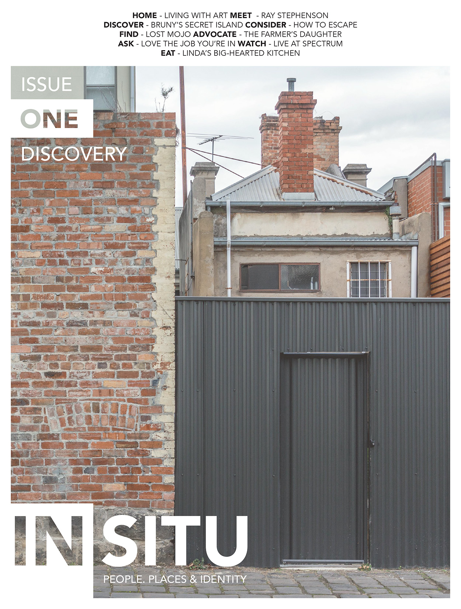
The Why: My mother came to me with an idea for a magazine that shared the stories of people and places she cherished in our home, Gippsland. She was our photographer and writer, leaving me to develop all the digital marketing presence, branding, and the layout of the magazine itself.
The How & Outcome: This was my first go at InDesign, and I couldn't have done it without the artistic input of my mother. The product we came out with sold really well at coffee shops and magazine retailers in Melbourne. I still regularly thumb through my copy in nostalgic wonder at what we managed to achieve.
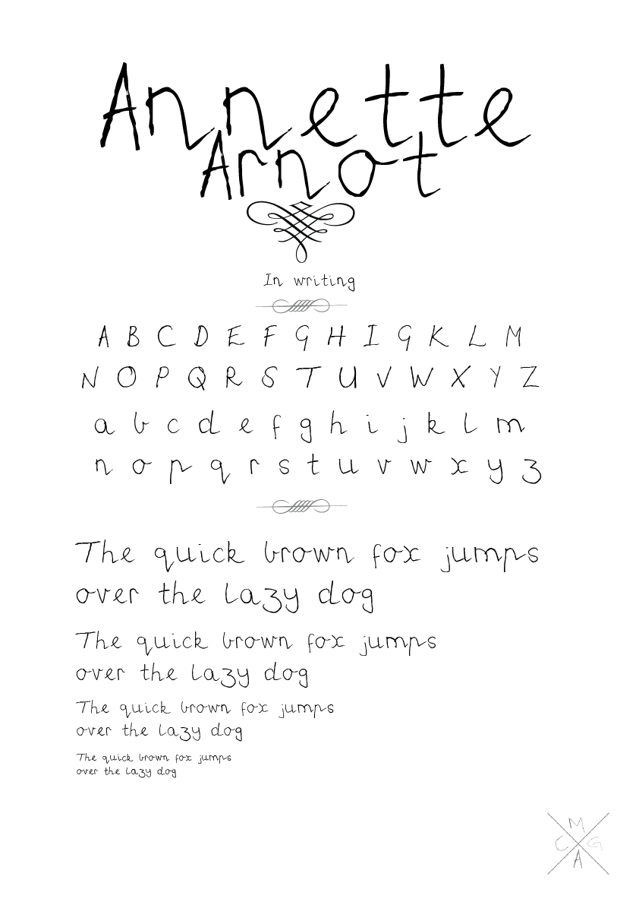
The Why: Over a decade ago, while applying to university for the first time, I was working on projects to fill out my barebones portfolio. While watching Ferris Bueller's Day Off, I was reminded of faking notes from my parents to school, and how much better I could have done that with Adobe's creative software.
The How & Outcome: I had my family each fill out a character sheet, painstakingly traced each letter, then used open-source software to compile them into TTF files. The display posters were printed and block-mounted to hang in the first room I had outside home, to remind me of them.
Download the Fonts (ZIP)The Why: Early-career hiring has become noisy, impersonal, and increasingly shaped by automation. In my early research, people told me they search for work online regularly, mainly rely on the big job boards, and largely do not enjoy the experience. LincUp began as a response to that friction: a video-first hiring concept designed to make recruitment feel more human, more immediate, and less like a black box.
The How: I developed LincUp from the ground up through research, feature sorting, wireframing, prototyping, and testing. The concept centres on guided video introductions that help applicants show more of who they are while giving recruiters clearer signals, faster. As the project evolved, I refined the tone and interface through testing, including replacing colder actions like "Accept" and "Deny" with "Connect" and "Pass," and adding context to features that users found unclear. I then extended the project beyond interface design into full product thinking, including value proposition work, MVP scoping, rollout planning, pricing, and platform strategy.
The Outcome: The result was a polished coded demo backed by a much broader service proposition. LincUp demonstrates not just UI design, but my ability to connect human-centred research, interaction design, testing, and business viability into one coherent product concept. Most importantly, it holds onto a strong point of view: technology should bring people back into the hiring process, not push them further out of it.
Visit Live Demo GitHub RepoThe Why: CELESTRIA was created in response to a simple challenge: many children struggle to stay engaged with traditional learning. Our team explored how space-themed games and low-cost VR could turn complex STEM concepts into something more interactive, memorable, and exciting for students.
The How: Working as part of a cross-disciplinary team, we developed CELESTRIA as a NASA-inspired educational platform built around immersive mini-game concepts like SpaceJunk.io and NavTrax. My role focused on UX design and the web demo experience; shaping the interface, information architecture, accessibility features, and overall presentation of the concept. I built a lean but polished prototype with mobile-friendly modals, settings like captions and colour-blind mode, and immersive A-Frame elements to help communicate the platform's learning vision clearly.
The Outcome: The result was a functional concept demo that brought together education, play, and accessibility in one cohesive experience. CELESTRIA helped me demonstrate collaborative product thinking, UX design for emerging interfaces, and the ability to translate a big speculative idea into something tangible, engaging, and presentation-ready.
Visit Live Demo GitHub RepoThe Why: This project was built to explore how an API-powered interface could feel fun rather than purely functional. Instead of displaying external data in a dry or predictable way, I wanted to turn live card pricing into a playful challenge with personality, tension, and a clear visual hook.
The How: Using JavaScript, jQuery, and the Scryfall API, I built a card comparison game where players guess which Magic card is worth more before the clock runs out. The experience pulls random card data live, supports currency switching, tracks score through a health-based system, and stores high scores locally for replayability. From the parody branding to the responsive UI and game feedback states, the goal was to make the whole thing feel polished, fast, and fun to interact with.
The Outcome: The result was a distinctive interactive web component that met the technical brief while feeling much more like a complete micro-product than a classroom exercise. Docksides Treasure Tracker let me show both front-end development and UX thinking through API handling, interface feedback, responsive behaviour, and a strong layer of theme and tone.
Play Live GitHub RepoThe Why: This project grew out of broader group research into affordable clean energy access in Sub-Saharan Africa. One of the clearest problems we uncovered was that many mini-grid and off-grid projects struggle to secure funding, not because the ideas lack potential, but because readiness is hard to communicate in a consistent, credible way. The Mini-Grid Bankability Health Check App was designed to make that process more legible for operators and more visible to potential funders.
The How: As part of a group deep dive, we explored several concept directions before selecting the Bankability Health Check Tool for prototyping. It offered the clearest user, the strongest workflow, and the most testable interface. The prototype guides operators through a structured assessment across areas like regulatory, financial, and operational readiness, then generates a scored profile that highlights weak spots and helps frame next steps. We tested the interactive flow with five users and used their feedback to evaluate clarity, trust, accessibility, and overall usability.
The Outcome: The result was a focused interactive concept that translated a dense policy and finance problem into a user-friendly digital tool. It demonstrated my ability to move from systems research and service thinking into practical UX design, shaping a product concept that makes abstract barriers easier to understand, communicate, and act on.
Visit Live Demo GitHub Repo